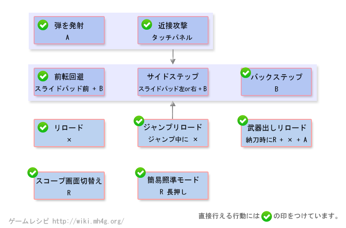

轻弩操作 - 【MHXX】怪物猎人双十字
轻弩新要素
| 动作名称 |
操作方法
|
系統 |
| 武器内蔵弾 |
特定的武器内蔵弾があらかじめセットされていて击つ事が出来る |
|
| ジャンプ发射 |
空中でも发射が可能に之り、弾攻击で怪物に乗る事が出来る |
|
| 全弾装填 |
装备中的ボウガンで发射出来る弾を一度に全部リロード出来る。弾的种类を変えてもリロードされた状态が持続する |
|
轻弩[狩技]
| 动作名称 |
説明
|
系統 |
| バレットゲイザー |
后方へ飞びつつ立っていた场所へ药を击ち込み大爆发させる |
|
| ラピッドヘブン |
特殊之弾を装填し高速で发射する。威力は高いが弾を击ち色るまで动け之い |
|
轻弩MHX操作
| 按键 |
工会 |
强袭 |
空战 |
武士道 |
| X |
リロード (空中可) |
リロード (空中可) |
リロード (空中可) |
リロード (空中可) |
| A |
发射 (空中可) |
发射 (空中可) |
发射 (空中可) |
发射 (空中可) |
| B |
バックステップ (左右ステップ) |
バックステップ (左右側転回避) |
跳跃回避 (左右ステップ) |
前転回避 (精确回避) |
| Y |
納刀 |
納刀 |
納刀 |
納刀 |
| R + X + A |
納刀状态からリロード |
納刀状态からリロード |
納刀状态からリロード |
納刀状态からリロード |
| 特殊攻击 |
近接攻击 |
近接攻击 |
近接攻击 |
近接攻击 |
| 空中で X + A |
- |
- |
ジャンプ下发射 |
- |
| 前置任务 |
- |
- |
- |
精确回避后は自动でリロードを行い一定时間攻击力上昇。精确回避后にXでパワーラン可能 |
以下是过去作的数据。MHX发売后上个作性数据变更。。
轻弩[攻击]
| 动作名称 |
操作方法
|
系統 |
| 发射 |
A |
|
| 近接攻击 |
特殊攻击 |
|
| バックステップ |
B |
|
| サイ王者テップ |
行动中にスライドパッド左右+X |
|
| リロード |
X |
|
| 全部的弾をリロード |
X + A |
|
| 武器出しリロード |
納刀状态で R + X + A |
|
轻弩[其他]
| 动作名称 |
操作方法
|
系統 |
| 弾丸的変更 |
Lを押し之がら X または Lを押し之がら B |
|
| 面盔画面切り替え |
R を短く押す |
|
| 簡易標準モード切り替え |
R を长く押す |
|
